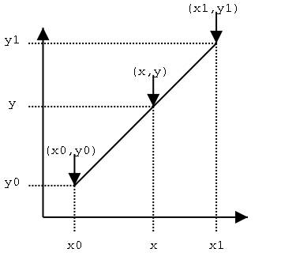
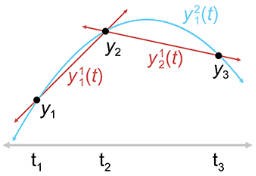
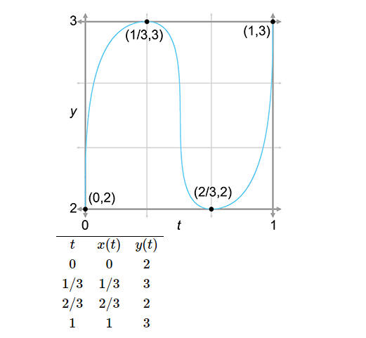
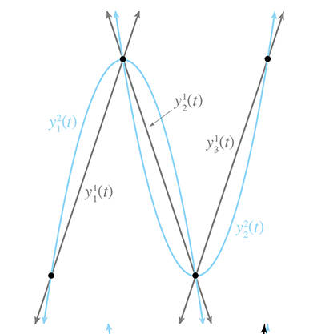
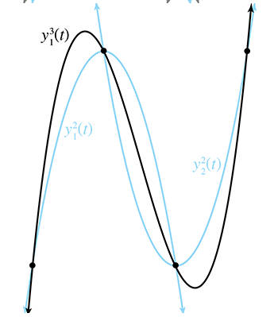

曲线插值之艾特肯算法 #
曲线插值是计算机图形学中使用的一种曲线近似方法，你可能在设计工具中使用过设计曲线功能，例如绘制贝塞尔曲线或者 b 样条曲线，通过调整几个控制点来绘制曲线，这些都用到曲线插值算法。所以这里介绍艾特肯插值算法（Aitken's Algorithm）。
多项式曲线插值 #
何为多项式曲线插值？你肯定知道线性插值（Linear Interpolation），就是给定两个点 (x0,y0) 和 (x1,y1) 在这两点之间的连线上确定一个未知点。

利用等比关系：
x−x0y−y0=x1−x0y1−y0很容易得到，线性插值的公式为：
y=y0+(x−x0)x1−x0y1−y0=x1−x0(x−x0)y1+(x1−x)y0艾特肯算法 #
艾特肯算法是一种曲线近似方法，通过给定控制点，计算控制点间的插值点来模拟曲线。
在计算机图形学中，曲线一般用参数化方程表示。3D 中最常用的是三次曲线方程，形式如下：
p(t)=c0+c1t+c2t2+c−3t3这里就不过多介绍参数化曲线方程的概念了，这并不是本节内容的目的，如果有需要可以看看这篇文章：https://pages.mtu.edu/~shene/COURSES/cs3621/NOTES/curves/curves.html
艾特肯的算法思想是递归，将复杂的问题，分为两个简单的问题，分别解决这两个简单的问题，然后合并简单问题的解决方案得到复杂问题的解决方案。
假设有 n 个控制点，艾特肯算法将复杂的插值问题拆分如下：
- 抛弃最后一个控制点，计算前 n - 1 个控制点的插值曲线
- 抛弃第一个控制点，计算后 n - 1 个控制点的插值曲线
最后合并（blender） 上述两段曲线。如果前 n - 1 个控制点的插值曲线的计算仍然复杂，可以继续按照上述思路递归分解合并，分解直到只有两个控制点时，使用线性插值的方式，计算插值曲线。
为了简化问题，这里我们只看 y 分量即可，因为针对的是参数方程，x 坐标的插值算法是与 y 相同的。 因为分解问题后，我们在控制点间能得到很多段线段，我们用 yi1(t) 表示 yi 和 yi+1 之间的线段，使用 yi2(t) 表示 yi 和 yi+2 之间的二次曲线。
先看一个简单的例子，假设有三个控制点 (t1,y1),(t2,y2),(t3,y3)。y12(t) 是 y1,y2,y3 的插值曲线，它是由 y11(t) 和 y21(t) 合并得到。

由线性插值算法能够得到第一段和第二段线段的方程：
y11(t)=t2−t1(t2−t)y1+(t−t1)y2y21(t)=t3−t2(t3−t)y2+(t−t2)y3二次曲线 y12(t) 的公式，仅仅是在 y11(t) 和 y21(t) 进行线性插值即可。
y12(t)=t3−t1(t3−t1)[y11(t)]+(t−t1)[y21]艾特肯算法的通用公式如下：
yi0=yiyij(t)=ti+j−ti(ti+j−t)[yij−1(t)]+(t−ti)[yi+1j−1(t)]不足之处 #
在本篇最后我们希望通过艾特肯算法模拟下图中的曲线，这是一个横着的 S 曲线。

通过艾特肯算法模拟后，结果如下。


可以看到通过艾特肯算法，控制点好像并不能真的能控制曲线的形状，第二个第三个控制点貌似失控了，这往往并不是我们想要的结果，所以设计工具中艾特肯插值曲线并不流行。
（完）